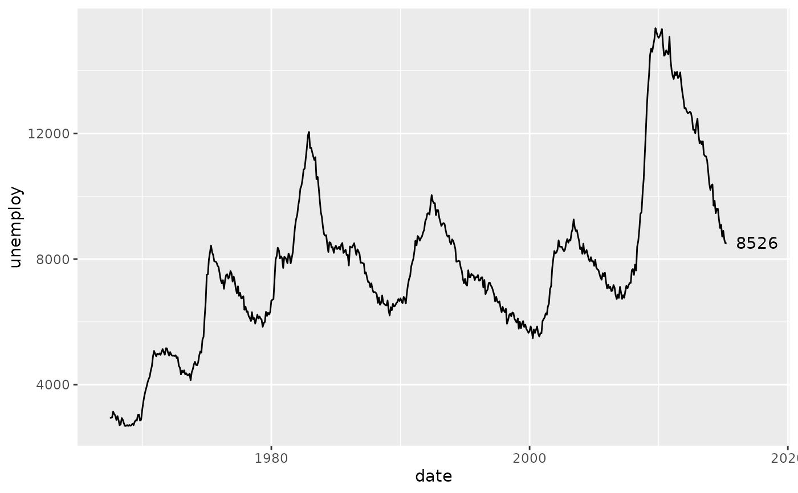
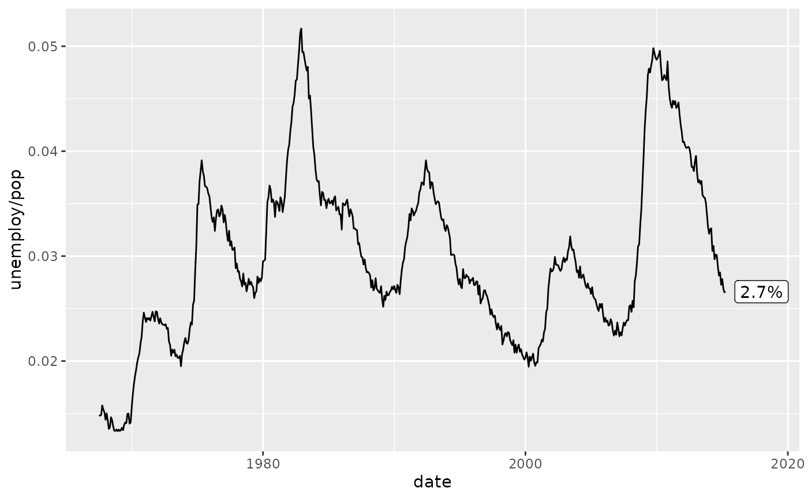
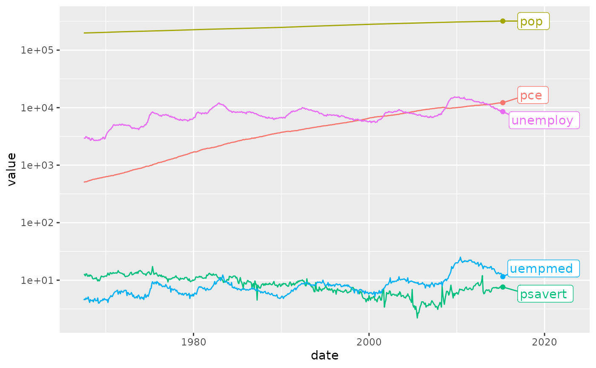

Add labels or points to the last value of a line chart
Source:R/stat_last_value.R
stat_last_value.RdCreates a label, point or any geom at the last point of a line (highest x value). This is useful for
line charts where you want to identify each line at its endpoint, write the last value of a
time series at the endpoint or just add a point at the end of a geom_line. This functions
also nudges the last value relative to the length of the x-axis.
The function automatically positions the label slightly to the right of the last point.
There are 5 functions:
stat_last_value(): The core statistical transformation that identifies the last point of a line (e.g. last date of the time series).geom_label_last_value(): Adds the last y value or a custom label after the last observation usinggeom_label.geom_text_last_value(): Adds the last y value or a custom text after the last observation usinggeom_text.geom_label_last_value_repel(): Adds non-overlapping labels withgeom_label_repel.geom_text_last_value_repel(): Adds non-overlapping text withgeom_text_repel.
Usage
stat_last_value(
mapping = NULL,
data = NULL,
geom = "point",
position = "identity",
nudge_rel = 0,
nudge_add = 0,
expand_rel = 0,
expand_add = 0,
labeller = NULL,
...,
na.rm = FALSE,
show.legend = NA,
inherit.aes = TRUE
)
geom_label_last_value(
mapping = NULL,
data = NULL,
stat = "last_value",
position = "identity",
nudge_rel = 0.015,
nudge_add = 0,
expand_rel = 0.05,
expand_add = 0,
labeller = NULL,
hjust = 0,
...,
na.rm = FALSE,
show.legend = FALSE,
inherit.aes = TRUE
)
geom_text_last_value(
mapping = NULL,
data = NULL,
stat = "last_value",
position = "identity",
nudge_rel = 0.015,
nudge_add = 0,
expand_rel = 0.035,
expand_add = 0,
labeller = NULL,
hjust = 0,
...,
na.rm = FALSE,
show.legend = FALSE,
inherit.aes = TRUE
)
geom_label_last_value_repel(
mapping = NULL,
data = NULL,
stat = "last_value_repel",
position = "identity",
nudge_rel = 0.03,
nudge_add = 0,
expand_rel = 0.05,
expand_add = 0,
labeller = NULL,
hjust = 0,
direction = "y",
min.segment.length = 0.5,
...,
na.rm = FALSE,
show.legend = FALSE,
inherit.aes = TRUE
)
geom_text_last_value_repel(
mapping = NULL,
data = NULL,
stat = "last_value_repel",
position = "identity",
nudge_rel = 0.015,
nudge_add = 0,
expand_rel = 0.035,
expand_add = 0,
labeller = NULL,
hjust = 0,
direction = "y",
min.segment.length = 0.5,
...,
na.rm = FALSE,
show.legend = FALSE,
inherit.aes = TRUE
)Arguments
- mapping
Set of aesthetic mappings created by
aes. Commonly used mappings:x: position on x-axis
y: position on y-axis
label: text to display (defaults to the last y value)
- data
The data frame containing the variables for the plot
- geom
The geometric object to use to display the data for this layer. When using a
stat_*()function to construct a layer, thegeomargument can be used to override the default coupling between stats and geoms.- position
Position adjustment. Defaults to "identity"
- nudge_rel
Numeric value specifying how far to nudge the label to the right, relative to the range of the x-values of the data. Defaults to 0.015 (1.5% of axis width) for labels.
- nudge_add
Numeric value specifying an absolute amount to nudge the label (in units of the x-axis).
- expand_rel
Numeric value specifying how far to expand the axis limits, relative to the range of the x-values of the data. This can be used to create room for longer text/labels. For repel functions this has to be large enough to place the text to achieve good results.
- expand_add
Numeric value specifying an absolute amount to expand the axis limits (in units of the x-axis).
- labeller
Label function to format the last value. E.g.
scales::label_percent(),scales::label_number(),scales::label_dictionary().- ...
Other arguments passed to
geom_label,geom_text,geom_label_repelorgeom_text_repel.- na.rm
If
FALSE, the default, missing values are removed with a warning. IfTRUE, missing values are silently removed.- show.legend
logical. Should this layer be included in the legends?
NA, the default, includes if any aesthetics are mapped.FALSEnever includes, andTRUEalways includes. It can also be a named logical vector to finely select the aesthetics to display.- inherit.aes
If
FALSE, overrides the default aesthetics, rather than combining with them. This is most useful for helper functions that define both data and aesthetics and shouldn't inherit behaviour from the default plot specification, e.g.borders().- stat
The statistical transformation to use on the data. Defaults to "last_value"
- hjust
Horizontal text alignment. Defaults to left aligned (0).
- direction
Direction in which to repel the labels. See
geom_text_repel.- min.segment.length
Minimum length of the leader line segments. See
geom_text_repel.
Details
The following calculated stats can be used further in aes:
after_stat(x0): the highest x valueafter_stat(y): the y value of the observation with the highest x value.after_stat(label_formatted): the formatted y value using thelabeller.
Examples
# Basic example with last value labels
library(ggplot2)
ggplot(economics, aes(x = date, y = unemploy)) +
geom_line() +
geom_text_last_value()

# Percentages
ggplot(economics, aes(x = date, y = unemploy / pop)) +
geom_line() +
geom_label_last_value(labeller = scales::label_percent(accuracy = 0.1))

# Multiple lines with custom labels
ggplot(economics_long, aes(x = date, y = value, color = variable)) +
geom_line() +
stat_last_value() + # Add a point at the end
geom_label_last_value_repel(aes(label = variable),
expand_rel = 0.1, nudge_rel = 0.05
) +
scale_y_log10() +
theme_mod_disable_legend()
